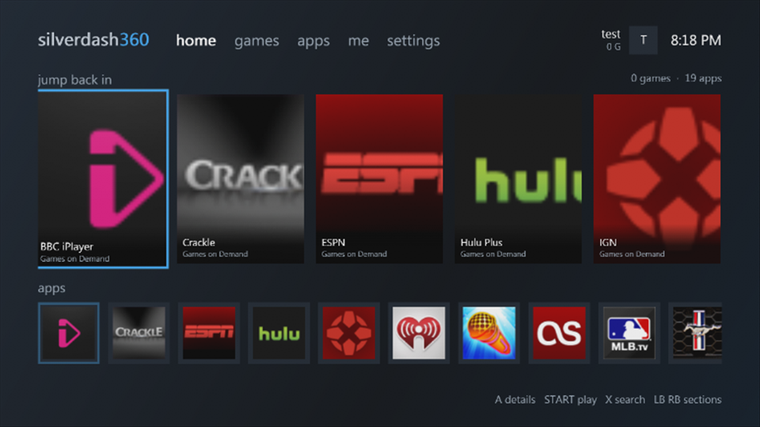
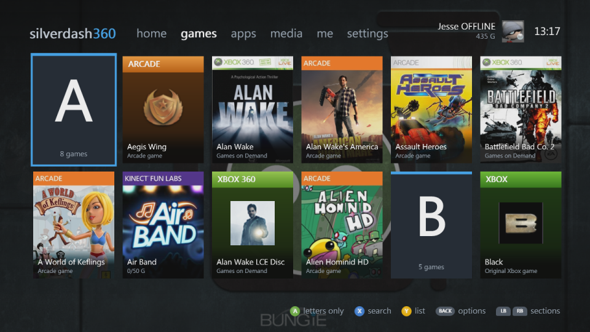
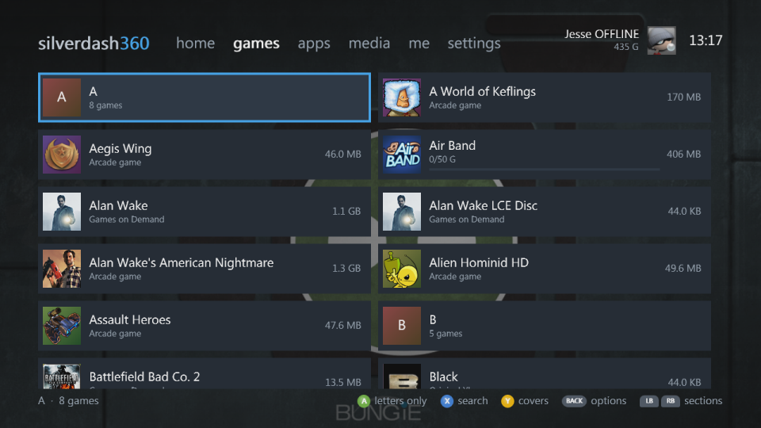
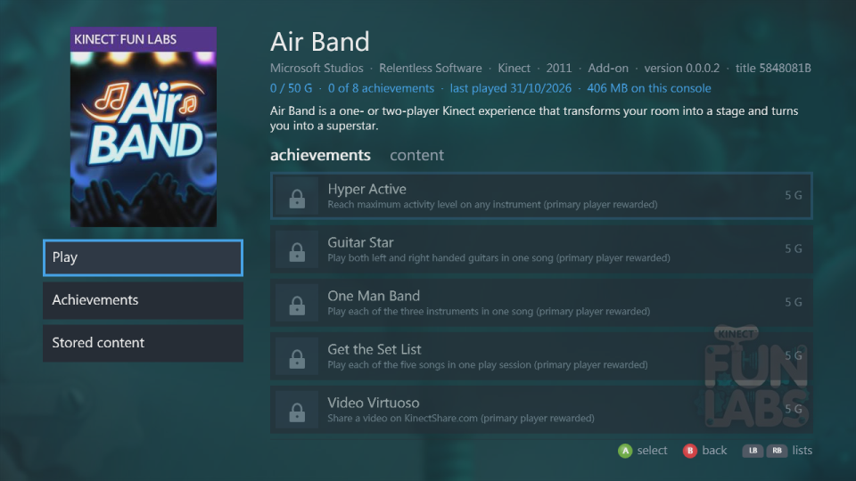
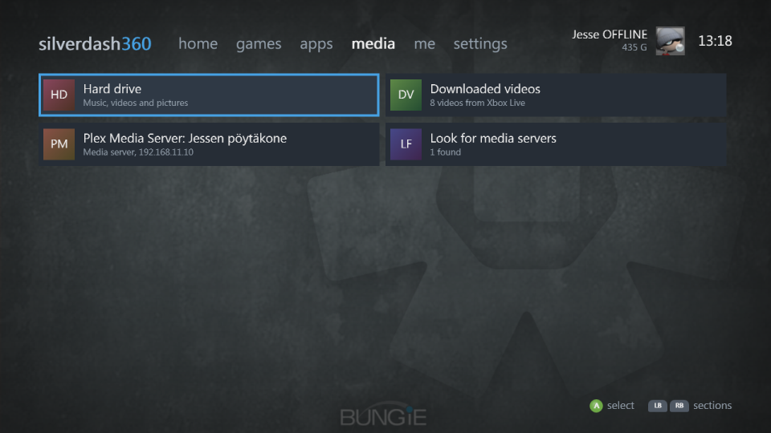
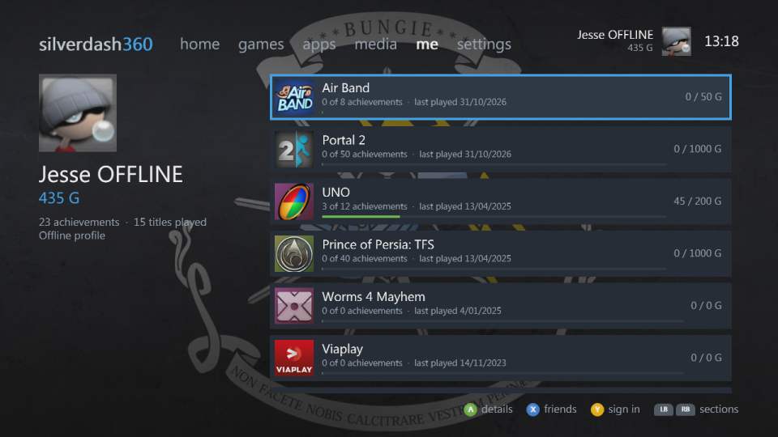
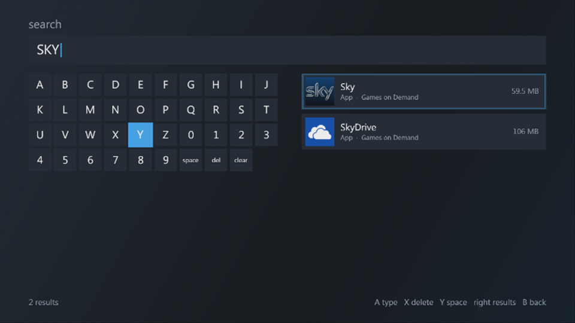
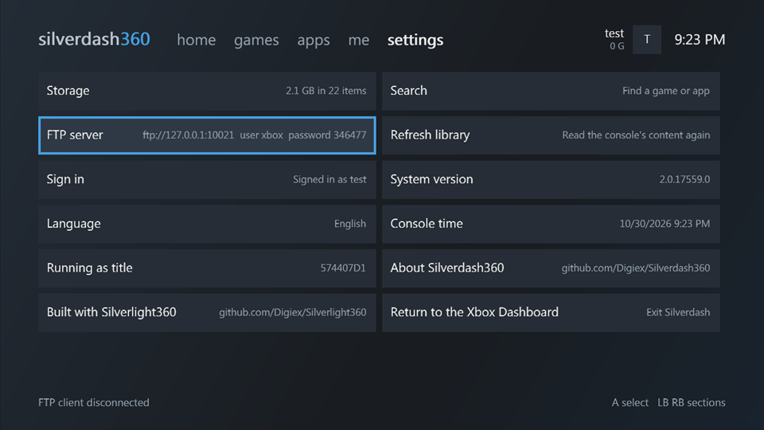
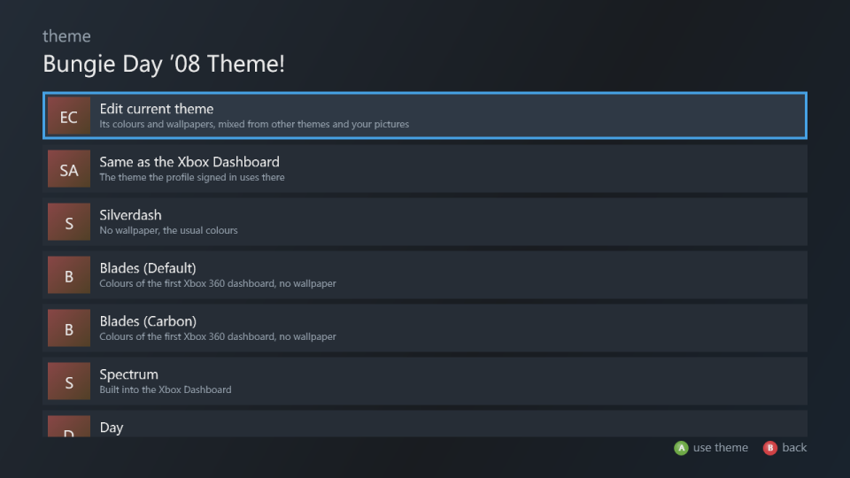
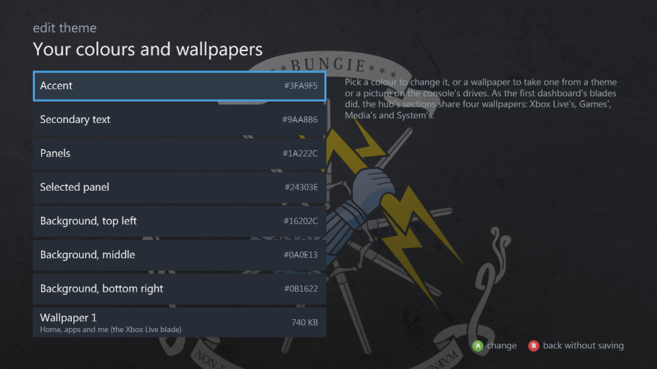

Silverdash360¶
Silverdash360 is a dashboard for the Xbox 360: it lists the games and apps on your console, with their box art, and starts them. It also plays your music, videos and pictures, from the console's drives and from media servers on your network, and shares the console's drives over FTP. It's written in C# on the console's own Silverlight platform with Silverlight360.
 |
 |
| Home: recently played and the apps | A shelf of covers, with a letter heading each letter |
 |
 |
| The same shelf as a list | A title's details and achievements |
 |
 |
| The drives, media servers and downloaded videos | Your profile and the titles you've played |
 |
 |
| Search as you type | Settings |
 |
 |
| Themes | The theme editor |
What it does¶
- Games and apps: everything installed on the hard drive and USB drives, Games on Demand, Arcade, Indie and demos, original Xbox games, and homebrew in
AppsandGamesfolders, with box art and store details from the Xbox Marketplace. Games and apps - Jump back in: the titles you played last, and the disc in the drive, on the home page.
- Media: music, videos and pictures from the drives, data discs and DLNA media servers such as Plex, and the videos you downloaded from Xbox LIVE. Media
- Your profile: gamertag, gamerscore and achievements. Each profile has its own saves, theme and played titles, and Silverdash360 follows you signing in and out from the Guide. It works with nobody signed in too. Getting around
- Themes: the console dashboard's themes with their wallpapers, its built-in Spectrum, Day and Night, the first dashboard's Blades colours, and a theme editor to mix your own, each profile with its own. Settings
- FTP server, file browser and storage: the console's drives over the network, every file on them, and what takes the space. Settings
- Updates: it tells you when there's a new version and installs it. Updating
- Welcome screen: the basic settings at the first start, and the new ones after an update. Settings
Getting started¶
- Install it: it needs an Xbox 360 that runs homebrew, the base package from Digiex and the latest update from GitHub.
- Find your way around: Getting around has the controls.
- If something isn't right, see Troubleshooting, and report it on GitHub if it's not there. Ideas for features go there too.
Silverdash360 is made by Digiex. Its source is on GitHub; see Development for building it yourself. Contributions and pull requests are welcome: see Contributing.